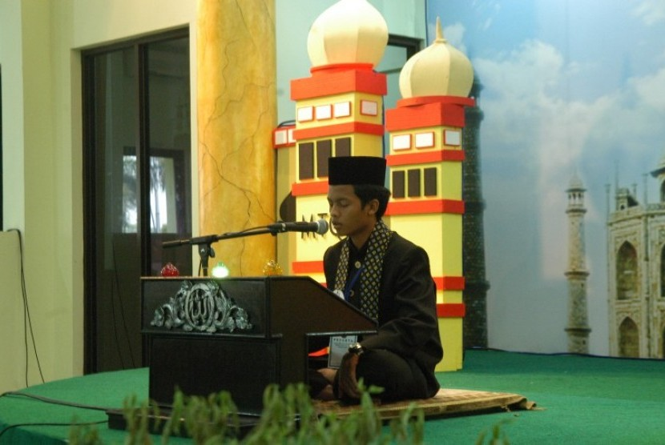

Urgensi Musabaqah Tilawatil Quran
Jumat, 24 April 2015 00:28
Oleh: KH Husin Naparin
SELAMAT Musabaqah Tilawatil Quran Nasional (MTQN) XXVIII Tingkat Provinsi Kalimantan Selatan, di Balangan 19-26 April 2015. Kata musabaqah (Bahasa Arab) artinya berlomba, bersaing, dari sini muncul kata musabaqatan, artinya kompetisi, kontest. Kata tilawah (Bahasa Arab) sama dengan qira’ah artinya membaca. Kata qur’an berarti maqru' (yang dibaca).
Menurut definisi Alquran ialah: "Kalam Allah swt yang merupakan mukjizat yang diturunkan (diwahyukan) kepada Nabi Muhammad saw, ditulis di mushaf dan diriwayatkan dengan mutawatir serta membacanya adalah ibadah."
Seorang muslim mempunyai tugas dan tanggung jawab terhadap kitab suci Alquran sebagai realisasi dari rukun iman percaya kepada kitab-kitab Allah swt; yaitu: mengenal dan memelihara kehormatan Alquran, membacanya (termasuk menghafalnya), menghayati, mengamalkan dan mendakwahkan isi kandungannya.
Pada 1946 di Kampung Bunga, Asahan, Sumatera Utara, pernah diadakan perlombaan membaca Alquran; barangkali ini pertama di Indonesia. Pada 1949, diadakan pula lomba baca Alquran diikuti oleh qari-qari dari Sulawesi dan Kalimantan.
Sejak 1952, setiap 22 Juni dalam rangka HUT kota Jakarta diadakan lomba baca Alquran diikuti oleh qari dewasa dan pelajar se DKI. Seterusnya, 1958 diadakan pula di masjid agung Al-Azhar, Jakarta, dalam rangka peringatan maulid Nabi oleh Jam’iyatul Qurra wal Huffazh, dan pada 1964 di Surabaya secara Nasional.
Pada 1967, diadakan lomba di Makasar untuk Indonesia bagian Timur dan Tengah. Kalsel menempatkan H Gazali Rahman (alm) dan Hj Khadijah Badri (alm), keduanya sebagai juara pertama.
Tahun 1968 diadakan MTQ Nasional pertama di Makassar, Sulawesi Selatan. Kalsel menempatkan Wahidah Arsyad (alm) sebagai qari’ah favorit kendati hanya menempati juara tiga, terakhir ia menjadi juara pertama pada MTQ di Medan.
Sejak itu diperlombakan cabang tilawah golongan dewasa pria dan wanita, berlanjut sampai sekarang memperlombakan cabang-cabang : Cabang tilawah dari golongan anak-anak, remaja, dewasa, cacat netra, dan qira’at masing-masing putra-putri, cabang Hifzh al-Quran; tilawah dan satu juz, tilawah dan lima juz, golongan sepuluh juz, dua puluh juz dan tiga puluh juz, cabang tafsir al-Quran Bahasa Arab, Bahasa Indonesia dan Bahasa Inggris; masing-masing putra-putri, cabang Fahm al-Quran, cabang Syarh al-Quran; bagi pelajar sekolah menengah dan atas, cabang Khatt al-Quran (naskah, hiasan dan dekorasi), cabang penulisan makalah tentang Alquran.
Urgensi MTQ dilihat pada dua faktor, yaitu intern dan ekstern. Faktor intern adalah untuk: meningkatkan mutu bacaan Alquran bagi umat Islam termasuk tadabburnya, membawa umat kearah pelaksanaan tugas dan tanggung jawab seorang muslim terhadap Alquran seperti diuraikan sebelumnya.
Yaitu; mengenal, menghormati, membaca (termasuk menghafalnya), menghayati kandungannya, mengamalkan dan mendakwahkannya, mendekatkan umat dengan Alquran, lebih-lebih pada saat kehidupan dewasa ini yang sangat mengglobal, memperkenalkan ilmu-ilmu Alquran kepada masyarakat. Sedangkan faktor ekstern, untuk memenuhi keperluan mewakili Indonesia ke MTQ bertertaraf internasional yang diadakan di luar negeri.